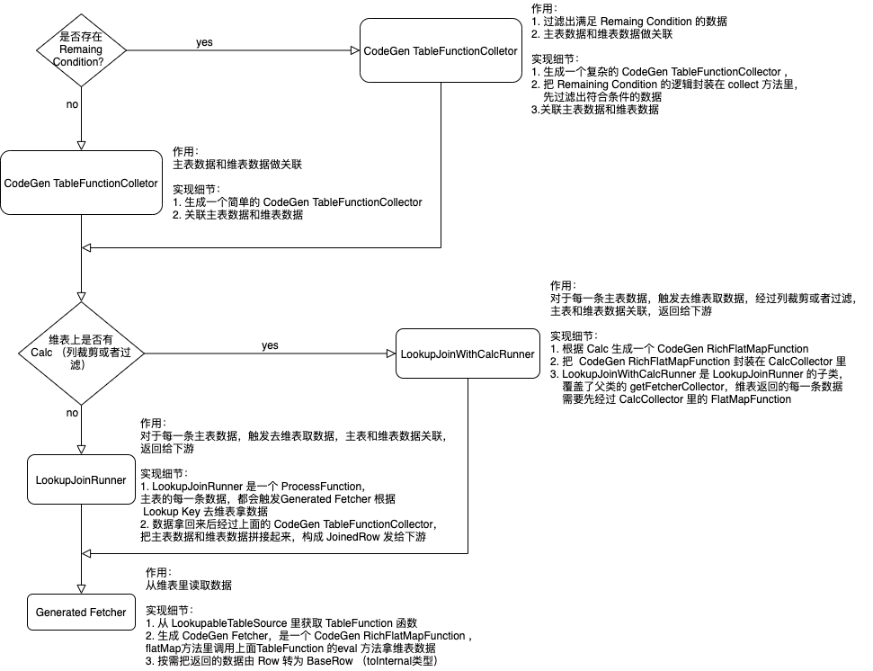

前言
本文是 Flink SQL 系列中的一篇，更多文章请关注Flink SQL 系列文档。
内容全部是原创，如有错误，欢迎铁汁们指出。另外，未经同意，不得转载。
原理梳理
LookupJoin 根据获取维表数据的方式是同步获取还是异步获取分为两种实现。同步的实现基于 ProcessOperator，异步的实现基于 AsyncWaitOperator。
Sync LookupJoin

对于同步的 LookupJoin 来说，主表一条数据 Record 来了以后，会经过以下几个步骤：
- 分析 Record 的 Key，基于 Key 去维表侧获取数据
- 如果维表上有 Calc，维表返回的数据需要经过 CalcCollector，做过滤或者列裁剪后才会返回
- 如果 JOIN 条件里除了维表上的 LookupKey 还有剩余的关联条件，经过 CodeGen TableFunctionCollector，过滤出满足 Remaing Condition 的数据
- TableFunctionCollector 里关联主表的 Record 和第3步返回的一条或多条维表记录
Async LookupJoin
异步的 LookupJoin 和同步的 LookupJoin 最大的区别就是当前主表的数据来了以后，发出异步关联请求后，不需要等请求返回，就可以处理下一条主表的输入数据了。对于异步的 LookupJoin 来说，主表一条数据 Record 来了以后，经过的流程：
- 分析 Record 的 Key，向维表发出异步的数据请求后，就可以处理下一条输入数据了
- 如果维表上有 Calc，维表返回的数据需要经过 TemporalTableCalcResultFuture，做过滤或者列裁剪后才会返回
- 如果 JOIN 条件里除了维表上的 LookupKey 还有剩余的关联条件，经过 CodeGen TableFunctionResultFuture，过滤出满足 Remaing Condition 的数据
- JoinedRowResultFuture 关联主表的 Record 和第3步返回的一条或多条维表记录